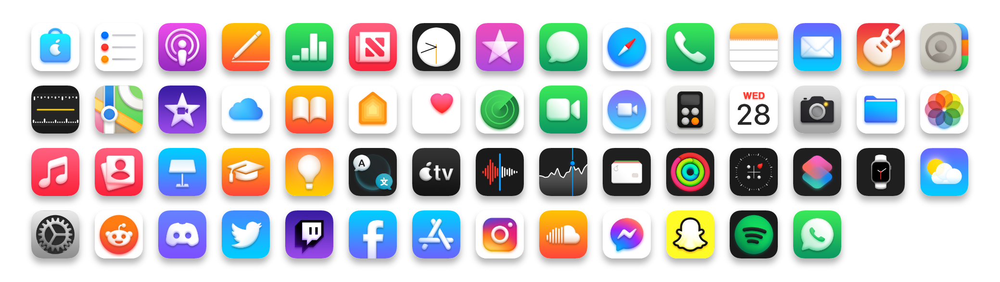
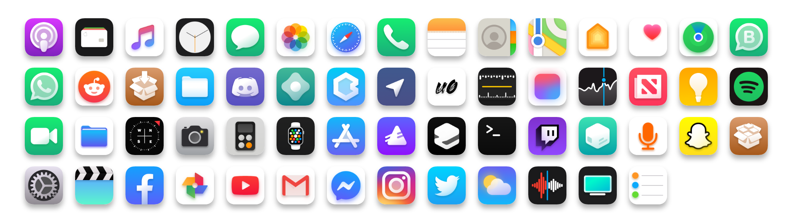

20 Feb 2022
21 Nov 2020
Second Attempt
Not much has changed from the previous attempt. I just redid icons in a different program - Affinity Designer. Only few icons were completely overhauled
2 Jun 2020
First Attempt
I started this icon pack, because I had jailbroken iPhone back then and I saw the possibility of theming icons, so I started doing them in Paint.NET.
